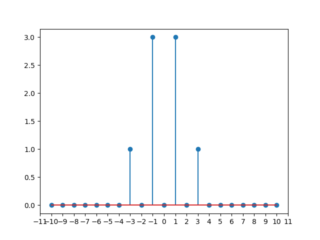
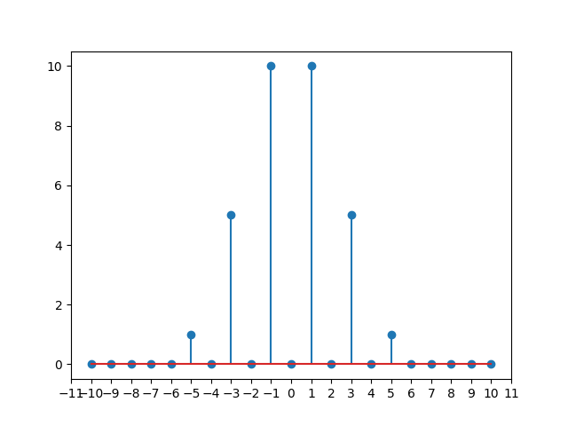

非线性谐振子的方程为：
x¨+ω02x+Ax2+Bx3+⋯=0
我们假设加入非线性项之后，x(t)依然是一个周期函数，但振动的周期和函数形式不再是简单的简谐振动sin(ω0t),cos(ω0t)。但由于它还是周期函数（假设这个原频率为ω），我们可以对它进行傅里叶级数展开:
x(t)=n=−∞∑∞fneinωt
其中fn是各项的振幅。
我们有了x(t)的展开式，如何计算各阶非线性项中xn(t)的值？这是计算的核心问题
x(t)x2(t)=n=−∞∑∞fneinωt=n=−∞∑∞m−∞∑∞fnfmei(n+m)ωt=u=−∞∑∞(n=−∞∑∞fnfu−n)eiuωt=u=−∞∑∞gueiuωt
其中gu=(f∗f)u=∑n=−∞∞fnfu−n是序列fn和自己的离散卷积
同理，xk(t)的计算就是k个序列fn作离散卷积，结果与fn一样，也构成一个无穷序列。下面我们展示一个离散卷积的计算示例。
我们将以f(0)为例，展示卷积的计算过程。f(0)的表达式为：
f1(0)=af−1(0)=a
计算g=f(0)∗f(0):
g0=n=−∞∑∞fn(0)f−n(0)=2aag2=n=−∞∑∞fn(0)f2−n(0)=a2,g−2=a2
在此基础上计算h=f(0)∗f(0)∗f(0)=g∗f(0):
h3h−3h±1=n=−∞∑∞gn(0)f3−n(0)=a3,=n=−∞∑∞gn(0)f−3−n(0)=a3=3a2a,3aa2

卷积计算可以不断地进行下去：
......
可以看出，对同一个函数地频谱进行多次卷积，会使得频谱由低频区向两侧的高频区扩展开来。这也是非线性谐振子频谱中高频项的来源。

当方程没有非线性项时：
x¨+ω02x=0
它的通解为：
x(t)=asin(ω0t)+bcos(ω0t)
或者写成复数形式：
x(t)=f1eiω0t+f−1e−iω0t
由于x是实数，所以f1=f−1∗
当存在非线性项，且非线性项的能量远小于谐振子项时,我们假设它对fn和ω的影响也是很小的，所以可以写成：
fn=fn(0)+fn(1)+fn(2)+⋯ω=ω0+ω1+ω2+⋯
把它们和非线性项代入方程：
x¨+ω02x+Ax2+Bx3+⋯=0
0=dt2d2∑n=−∞∞(fn(0)+fn(1)+fn(2)+⋯)ein(ω0+ω1+ω2+⋯)t+ω02∑n=−∞∞(fn(0)+fn(1)+fn(2)+⋯)ein(ω0+ω1+ω2+⋯)t+A∑n=−∞∞(f(0)+f(1)+f(2)+⋯)∗(f(0)+f(1)+f(2)+⋯)nein(ω0+ω1+ω2+⋯)t+B∑n=−∞∞(f∗f∗f)nein(ω0+ω1+ω2+⋯)t
以上式子可以简写成：
n=−∞∑∞(−n2ω2fn+ω02fn+A(f∗f)n+B(f∗f∗f)n+⋯)einωt=0
左侧为傅里叶展开式，右边是零，由einωt的完备性知，左侧各项系数为0：
−n2ω2fn+ω02fn+A(f∗f)n+B(f∗f∗f)n+⋯=0∀n
−n2(ω0+ω1+ω2+⋯)2(fn(0)+fn(1)+fn(2)+⋯)+ω02(fn(0)+fn(1)+fn(2)+⋯)+A∑n=−∞∞(f(0)+f(1)+f(2)+⋯)∗(f(0)+f(1)+f(2)+⋯)n+⋯=0
将上式按大小阶数展开，相同阶数和为零，得到方程：
第零阶:(−n2+1)ω02fn(0)=0,∀n
第一阶:A(f(0)∗f(0))n+ω02fn(1)−2n2ω0ω1fn(0)−n2ω0fn(1)=0,∀n
从第零阶中可以解出
{fn(0)=0,n=±1fn(0)=0,n=±1
由于x(t)为实数，fn=fn∗，不妨设f1(0)=a,f−1(0)=a
这对应线性项：
x(t)=2Re(a)cosω0t−2Im(a)sinω0t
A(f(0)∗f(0))n+ω02fn(1)−2n2ω0ω1fn(0)−n2ω0fn(1)=0,∀n
第一阶中含有fn(1),ω1两个未知量。
当n±1时，方程中fn(1)前系数为零，方程中只剩下ω1,可以解出：
A(f(0)∗f(0))±1−2ω0ω1f±1(0)=0ω1=2ω0f±10A(f(0)∗f(0))±1
经过计算知道ω1=0
当n=±1时，代入ω1=0可以计算各个fn(1)的值：
fn(1)=(n2−1)ω02A(f(0)∗f(0))n(n=±1)
看起来我们无法计算f±1(1)的值，但因为第零阶中的a是人为规定的，故可以包含高阶下n=±1的微扰（相当于假设振动基频的振幅就是a,a）
因此我们不妨设f±1(1)=0
第k阶的方程可以写作：
(−n2+1)ω02fn(k)−2fn(0)n2ω0ωk+λn(ω02,A1,⋯,Ak,ω1,⋯,ωk−1,fn(0),fn(1),⋯,fn(k−1))=0
在求第k阶之前，我们已经求得了ω1,⋯,ωk−1,fn(0),⋯,fn(k−1)的值，因此函数λn是已知项
- n=±1 可以求出ωk
- n=±1可以求出fn(k)(n=±1)
因此可以不断地计算下去。
可以看到，更高阶的计算十分繁琐，涉及的计算不仅项数极多，而且计算式中存在对无穷序列的多次离散卷积，很难处理。为了减少计算量，我们转向自动化符号计算工具(sympy)，开发了一个计算各阶项参数的程序
(下面设定f1(0)=a,f−1(0)=a)
第一阶
ω1=0
f0(1)=−ω022A1aa
f2(1)=3ω02A1a2,f−2(1)=3ω02A1a2
第二阶
ω2=6ω03a(−10A12+9A2ω02)a
f3(2)=12ω04A12a3+8ω02A2a3,f−3(2)=12ω04A12a3+8ω02A2a3
第三阶
ω3=0
f0(3)=−9ω0638A13a2a2+ω0410A1A2a2a2−ω026A3a2a2
f2(3)=54ω0659A13a3a−12ω0431A1A2a3a+3ω024A3a3a,f−2(3)=54ω0659A13aa3−12ω0431A1A2aa3+3ω024A3aa3
f4(3)=54ω06A13a4+12ω04A1A2a4+15ω02A3a4,f−4(3)=54ω06A13a4+12ω04A1A2a4+15ω02A3a4
(查看输出结果)
- ω2k=0,ω2k+1=0
- 圆频率修正的大小和振幅相关，而线性振子的圆频率和振幅无关。这是非线性振子的特性
- 阶数k与频谱修正项关系：
- 共轭：fn(k)=f−n(k)
- k阶的频谱修正fn(k)只对有限个n不为0，且k越大不为零的数量越多
- k=1:n=0,±2
- k=2:n=±3
- k=3:n=0,±2,±4
- 奇偶性：k为奇数时，存在对f0（也就是平衡位置）的修正。这是因为谐振子该阶项对应的受力始终沿着一个方向；k为偶数时对f0的修正为0
- 非线性项Ai对频谱修正的关系：
- Ak对频谱的影响从第k阶开始出现，会出现无限多包含Ak的项
一些性质：
- 不同Ai产生的频谱不能叠加（因为存在A1A2这样的项）
- A1对各阶修正频率的影响：
- A2k只影响ω2k,ω2k+2,⋯
- A2k+1只影响ω2k+1,ω2k+3,⋯
- A1对各阶修正频谱的影响：
- A2k对所有阶数≥2k的fnk有影响
- A2k+1只影响奇数阶项:f2k+1,f2k+3,⋯